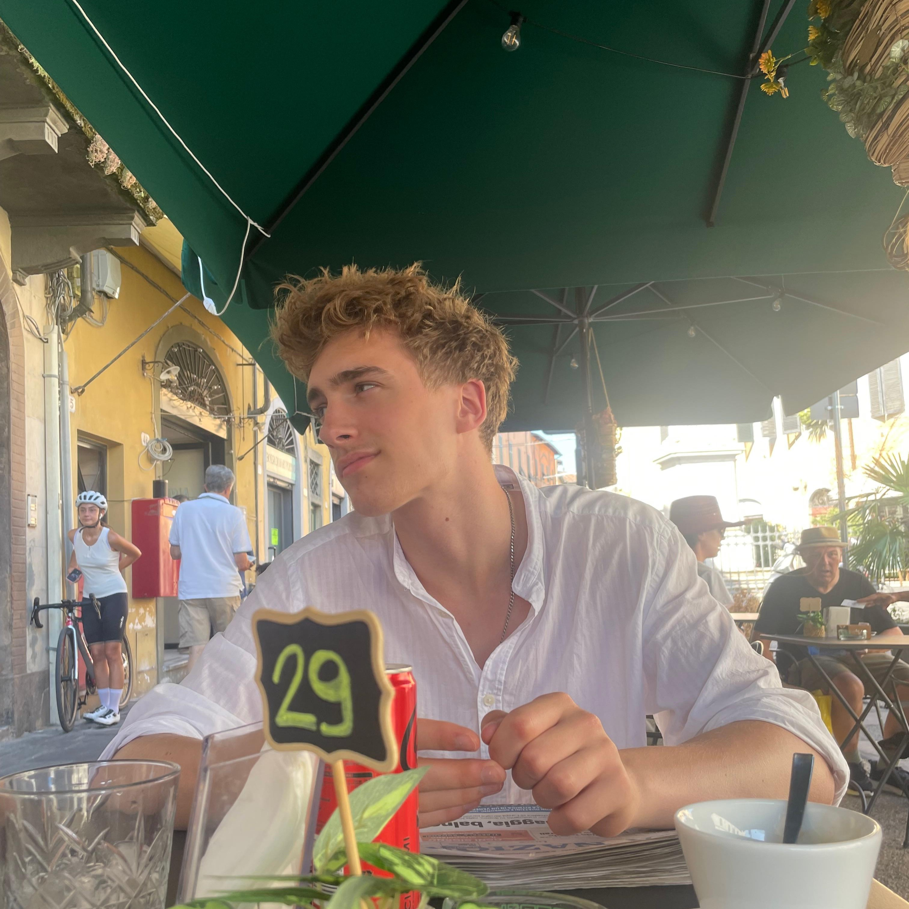

Portfolio website
Boris Zwietink
About Me

Hi, I'm Boris and 17 years old. I was born and raised in the Netherlands and went to Metis Montessori Lyceum, where I've build up a bunch of experience which you are able to see here. Besides my educational life I love to explore hobbies, activities and the world. If you're not busy living, you're busy dying.